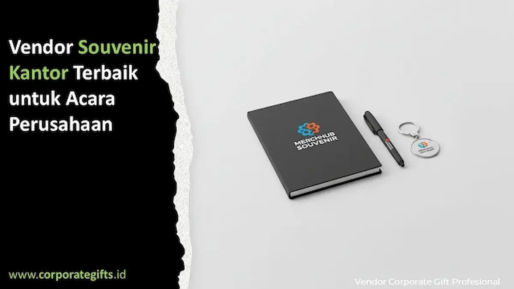

Corporate Gifts ID - Vendor souvenir kantor terbaik adalah mitra pengadaan yang mampu menyediakan produk berkualitas premium, layanan konsultasi desain selaras identitas merek, jadwal produksi terukur dan tepat waktu, serta opsi personalisasi logo yang presisi. Souvenir bukan sekadar cenderamata simbolis, melainkan representasi fisik dari martabat dan profesionalisme instansi, sehingga memilih souvenir kantor yang tepat menjadi pilar utama dalam strategi branding acara perusahaan.
Poin Kunci Memilih Vendor Souvenir Kantor:
- Mitra Strategis Branding: Vendor berpengalaman tidak hanya menjual barang mentah, melainkan memberi rekomendasi kurasi yang memperkuat citra positif institusi.
- Konsistensi Kualitas Fisik: Memiliki standar QC ketat untuk memastikan tidak ada logo miring, jahitan lepas, atau warna pudar antar unit.
- Fleksibilitas Desain & Anggaran: Siap menyelaraskan konsep mockup visual dan spesifikasi teknis dengan ketersediaan pagu anggaran kantor.
- Kepatuhan Lead Time: Komitmen jadwal produksi dan logistik pengiriman terencana agar tidak mengganggu jalannya rundown acara.
- Penerapan Pilar Berkelanjutan (ESG): Menghadirkan opsi cenderamata ramah lingkungan berbahan bambu, goni, atau material daur ulang berkualitas.
Dalam lanskap bisnis modern yang dinamis, setiap agenda perusahaan - mulai dari rapat kerja tahunan, penandatanganan kemitraan strategis, hingga customer gathering - merupakan momentum emas untuk mengukuhkan reputasi brand. Elemen suvenir yang sering kali dianggap pelengkap justru menjadi benda fisik yang paling lama disimpan dan diingat oleh para tamu kehormatan.
Mengapa Vendor Souvenir Kantor Memegang Peran Penting
Penyedia cenderamata kantor profesional bertindak sebagai konsultan perwujudan identitas korporat. Mereka menerjemahkan visi dan nilai integritas perusahaan ke dalam produk berdaya guna tinggi, mulai dari pemilihan bahan baku bersertifikat, penentuan teknik kustomisasi logo (grafir laser, deboss, atau UV print), hingga rancang bangun kemasan hardbox yang mewah.
Bekerja sama dengan vendor berpengalaman membebaskan divisi panitia dari beban teknis yang rawan kendala. Mulai dari penentuan jenis suvenir yang selaras dengan tema acara hingga kepastian jadwal perakitan dan distribusi multi-lokasi yang terjamin keamanannya.
Souvenir sebagai Cerminan Citra dan Nilai Perusahaan
Ketika sebuah instansi mengundang klien bisnis atau mengumpulkan seluruh staf internal, setiap item suvenir yang diserahkan menjadi tolok ukur penghargaan manajemen. Cenderamata berkualitas seperti souvenir custom VIP berbalut kulit atau tumbler termos berinsulasi ganda secara spontan memancarkan wibawa profesional.
Vendor terkemuka memahami pentingnya kesempurnaan detail mikroskopis. Mereka tidak sekadar menyerahkan paket jadi, melainkan memastikan pengalaman sentuhan pertama (unboxing experience) yang mengesankan melalui kerapian pita kemasan, ketajaman cetak logo, dan aroma material yang segar.
Bagaimana Menentukan Vendor Souvenir Kantor yang Tepat
Memilih workshop tidak boleh didasarkan semata-mata pada penawaran harga termurah. Banyak panitia berujung kecewa akibat barang tiruan yang mudah rusak atau paket cenderamata yang terlambat mendarat saat sesi registrasi telah usai.
Vendor souvenir kantor terbaik umumnya memiliki kualifikasi standar berikut:
- Portofolio Aktual & Beragam: Memiliki arsip dokumentasi kerja sama nyata dengan instansi BUMN, korporasi swasta nasional, dan lembaga pendidikan.
- Layanan Mockup Digital & Sampel Fisik: Memberikan visualisasi 2D/3D proporsional dan sampel fisik sebelum lini produksi massal berjalan.
- Jadwal Produksi Terstruktur: Memiliki lembar timeline transparan dan sistem pelacakan progres pengerjaan di workshop.
- Jaminan Garansi Purnajual: Garansi penggantian unit cacat atau pecah saat pengiriman tanpa proses klaim yang berbelit.

Pengepakan rapi paket souvenir kantor eksklusif dengan perlindungan ekstra sebelum didistribusikan ke klien.
Tren Souvenir Kantor: Elegan, Fungsional, dan Berkelanjutan
Dalam beberapa tahun terakhir, preferensi cenderamata kantor bergeser secara signifikan ke arah produk fungsional harian yang ramah lingkungan. Perusahaan besar kini memprioritaskan item berdaya guna tinggi yang mendukung gaya hidup produktif.
Pilihan seperti smart tumbler vacuum flask bertemperatur LED, powerbank nirkabel berbalut kayu alami, dan agenda bersampul serat daur ulang menjadi primadona. Selain mengedepankan estetika modern, tren ini mengafirmasi komitmen institusi terhadap tanggung jawab sosial dan kelestarian lingkungan (prinsip ESG).
Tabel Rekomendasi Paket Souvenir Kantor Acara Perusahaan
Berikut matriks opsi paket souvenir kantor yang dapat dikustomisasi sesuai skala dan karakter agenda korporat Anda:
| Kategori Paket | Rekomendasi Item Souvenir | Karakteristik & Nilai Tambah | Kesesuaian Agenda Acara |
|---|---|---|---|
| Executive Gift Set VIP | Tumbler vacuum flask, pena logam berukir, agenda kulit | Sentuhan prestisius, bahan tahan lama, grafir laser nama | Rapat Direksi, Serah Terima Jabatan, Apresiasi Mitra VVIP |
| Eco-Friendly Green Pack | Notebook serat bambu, tote bag kanvas goni, cutlery set kayu | Bahan alami dapat terurai, menguatkan citra peduli lingkungan ESG | Program CSR, Gathering Lingkungan, Seminar Keberlanjutan |
| Smart Tech Merchandise | Powerbank wireless, flashdisk OTG, speaker bluetooth mini | Fungsional tinggi, menunjang produktivitas digital pekerja mobile | Konferensi MICE, Kickoff Meeting, Expo Teknologi |
| Event Essentials Kit | Pulpen gel custom, notes spiral, tali lanyard ID card berlogo | Ekonomis untuk jumlah besar, keseragaman visual profesional | Pelatihan Internal, Onboarding Karyawan Baru, Townhall Meeting |
Rekomendasi Souvenir Premium dari Vendor Terpercaya
Vendor profesional yang berintegritas selalu menawarkan fleksibilitas kurasi paket sesuai dengan panduan visual dan alokasi anggaran Anda. Pilihan cenderamata terbaik mencakup:
- Gift Set Executive Terpadu: Perpaduan tumbler tahan panas dingin, buku saku kulit sintetis, dan ballpoint metal berbobot mantap.
- Souvenir Gaya Hidup Sehat: Botol minum olahraga bebas BPA, handuk olahraga serat mikro, dan lunch box bersekat higienis.
- Merchandise Event Kolaboratif: Payung lipat otomatis anti-UV dan tas ransel laptop berfitur port USB charger.
Kesimpulan
Memilih vendor souvenir kantor terbaik bukan sekadar transaksi jual beli barang promosi, melainkan langkah strategis untuk memperkuat citra dan reputasi instansi di hadapan publik dan pemangku kepentingan. Vendor yang tepat akan menjadi mitra tepercaya yang menjamin mutu, keanggunan, dan ketepatan waktu pengiriman suvenir Anda.
Pertanyaan yang Sering Diajukan (FAQ)

Ditulis oleh: Sholikhatun Nikmah
Senior Corporate Gifting SpecialistSpesialis kurasi souvenir VIP, gift set eksekutif, hampers korporat, dan cinderamata kemitraan strategis B2B di CorporateGifts.ID.
Lihat Profil Lengkap & Panduan Lainnya